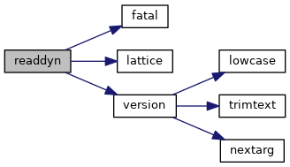
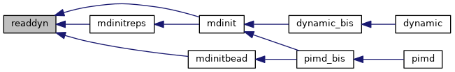

|
Tinker-HP v1.3
|
|
Tinker-HP v1.3
|
Go to the source code of this file.
Functions/Subroutines | |
| subroutine | readdyn (idyn) |
| "readdyn" get the positions, velocities and accelerations for a molecular dynamics restart from an external disk file More... | |
| subroutine readdyn | ( | integer | idyn | ) |
"readdyn" get the positions, velocities and accelerations for a molecular dynamics restart from an external disk file
| [in] | idyn,: | unit of file |
Definition at line 21 of file readdyn.f90.
References fatal(), lattice(), and version().
Referenced by mdinit(), mdinitbead(), and mdinitreps().


 1.8.5
1.8.5